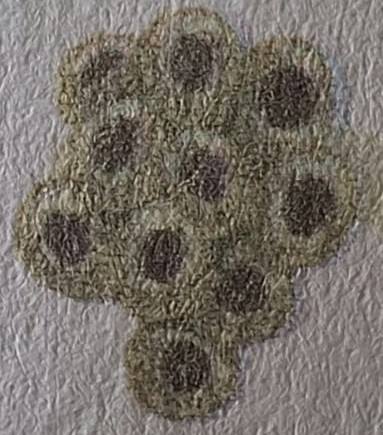
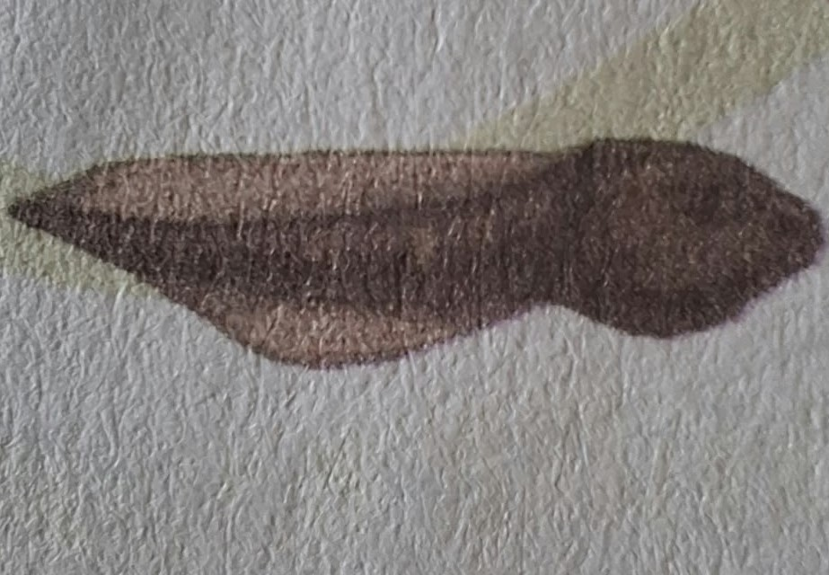
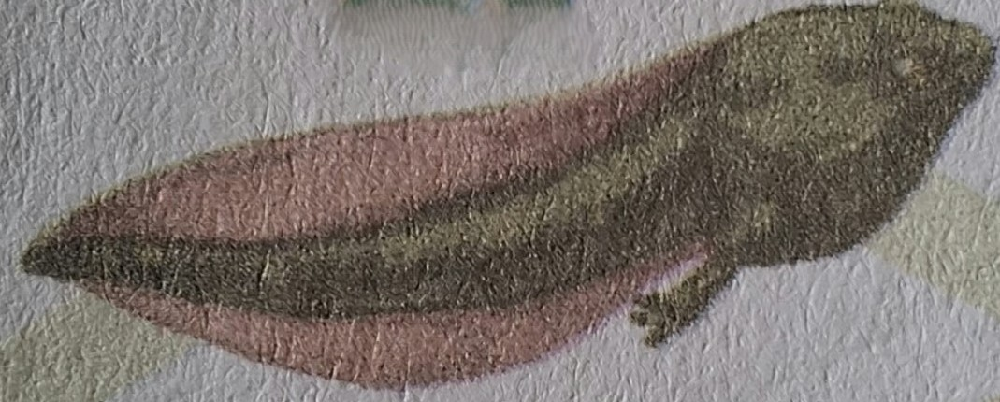
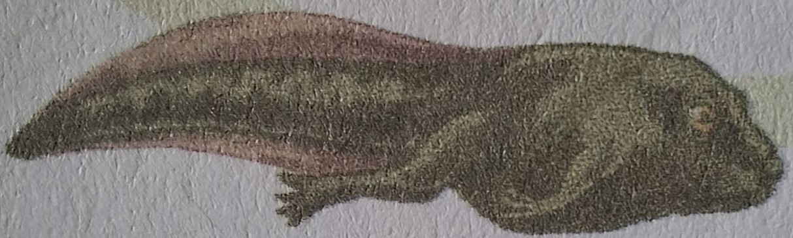
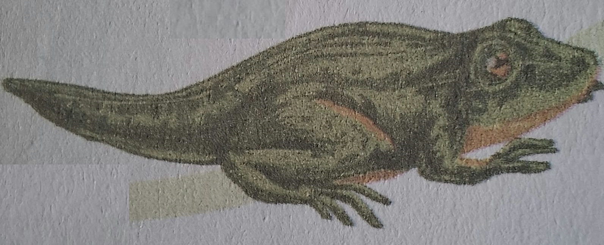
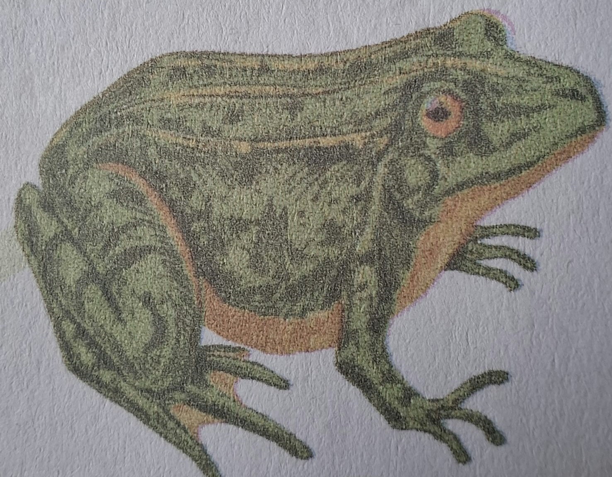

🐸 Jogo 2: Ciclo de Metamorfose da Rã
⬅ Voltar ao Portal de Ciências
💡
Desafio de Ordenação:
Observe as imagens ampliadas e escolha a descrição correta para cada etapa do ciclo da rã!
1

-- Escolha a descrição da 1ª Etapa --
Girino com duas pernas traseiras mais desenvolvidas
Ovos de rã fecundados. Esses ovos vão se tornar girinos.
Rã em forma de adulto, logo poderá se reproduzir
2

-- Escolha a descrição da 2ª Etapa --
Quando o girino sai do ovo, respira por meio de brânquias na cabeça.
Girino com quatro pernas e uma cauda que o ajuda a nadar
Girino desenvolve pulmões e precisa ir à superfície
3

-- Escolha a descrição da 3ª Etapa --
Ovos de rã fecundados
Girino com as pernas traseiras desenvolvidas. Nessa fase, desenvolve pulmões e vai à superfície.
Rã adulta
4

-- Escolha a descrição da 4ª Etapa --
Girino com duas pernas traseiras mais desenvolvidas e as dianteiras no início do desenvolvimento.
Girino sai do ovo
Girino com quatro pernas e cauda
5

-- Escolha a descrição da 5ª Etapa --
Girino desenvolve pulmões
Girino com quatro pernas e uma cauda que o ajuda a nadar.
Rã em forma de adulto
6

-- Escolha a descrição da 6ª Etapa --
Ovos de rã
Girino com duas pernas
Rã em forma de adulto, logo poderá se reproduzir e dar origem a outras rãs.
Verificar Ordem da Metamorfose 🔄